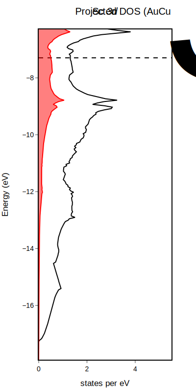

PlotDFT.jl
Scripts for plotting basic DFT data from VASP with Julia. Plots can be exported in any of the formats allowed by PlotlyJS for post-processing, including .pdf, .html, .json, .png, .svg, .jpeg, and .webp.

See examples for more detail.
Dependencies
- Electrum.jl for reading DFT data
- PlotlyJS for plotting
Current features
- Plot the total DOS and projected DOS (l- and lm- decomposed) from VASP's outputs
- Plot DOS from files generated from LOBSTER
Planned features
- Customize legend
- Plot spin-polarized DOS.
- Plot band structures.
- Plot -pCOHP curves from LOBSTER.
- Plot phonon DOS and band structures.
Installation
If you haven't already, install Julia.
Open the Julia REPL and access the package manager by typing ]. Add PlotDFT.jl.
(@v1.8) pkg> add https://github.com/xamberl/PlotDFT.git